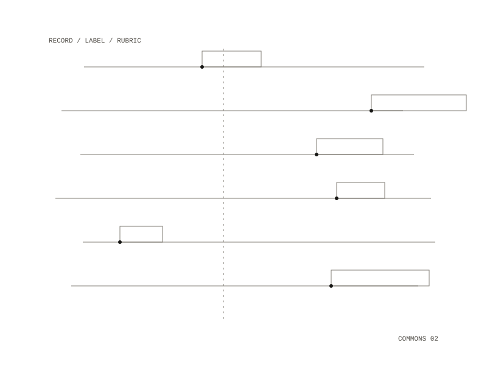

governance
What the commons has decided about its repositories, and why. This repository is the record: the git server enforces the decisions by making a repository private or not, and admins make them by applying a label to an issue. It is where they are written down, so that the answer to "who exposed this, and on what basis" is a git log.

Who writes
Admins write here and members read. A member can ask for a change and cannot make one; keeping the record in each member's own repository would amount to self-certification.
Every new repository on the server is private, readable only by members. A record exists only as an exception to that default, so most repositories never need one. "Public" means public to the commons: everything, including a repository marked public, is behind the login.
Asking and deciding
A member opens an issue from a template; read access is enough. The governance service runs the rubric against the named repository and posts the results as a comment, so the admin is looking at evidence. An admin then applies one label:
ratify: readable by everyone with an accountrevoke: back to members onlysanction:internal-onlyandsanction:cooldown: the first and second sanction rungs, the second with an end daterejected: nothing changes, and the reason stays in the thread
The service re-checks the required rubric items before acting on any label. Appeals are comments on the issue. Records are keyed by the repository's numeric id, so a rename does not orphan them.
The rubric
Seven checks, kept as data in rubric.json. Four are checked by machine: secrets scrubbed, an open-source licence, docs that match the code they describe, and documentation that parses. Three are judgements left to the admin: whether the work matches the commons' stated values, whether it is finished enough to be useful, and whether it is safe for others to adopt. The secrets check fails closed: if it cannot scan, it fails.
one record per exception, a contribution ledger, public keys, the rubric
an admin applying a label to an issue